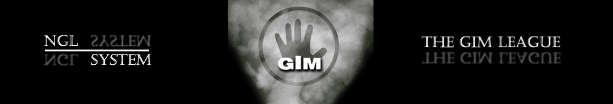
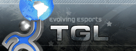

Это реконструированный сайт topw3.narod.ru | Харьков 2005-2007
Статистики ради...
Если говорить вкраце, то на протяжении менее чем двух недель, ТоР отыграл 5 (!!!) матчей с соперниками разного уровня игры. И хотя наша команда и выбыла с лиги TGL, все же мы сделали отличный задел для успешного старта основного сезона двух наших основных лиг- RWL и GIM. Об этом и поговорим...
Первый в клановой истории NGL матч клан ТоР играл на лиге GIm. Лига отличается среди прочих любительских проектов наличием сносного призового фонда и более менее неплохой организацией. Так или иначе, но в первых матчах наша команда играла квалификационные раунды- для определения группы с которой мы начнем основной сезон. В первом туре отборочной сетки ТоР с определенными трудностями, но разделывает таки средненький клан EWW, на котором хорошо потренировали ЛА. Дебютировал в играх за клан (правда неудачно) Хорек, проигравший на EI эльфу Ворону. Затем все надежды EWW Практически похоронил наш молодой эльф Noobkiller сделавший три победы подряд. И вероятно сделал бы и четвертую, но НК дискает и счет становится 3-2. Правда ненадолго. Уже в следующей игре Буч без проблем удается закончить матч. 4-2!
Во втором матче сетки нашей команде противостоял слабый (из песни слов не выкинешь) клан 4FT, который после непродолжительной борьбы был повержен... давно инактивным Адовеовом. Смех и грех. 4-0
Ну и финал отборочной сетки наш клан играл с единственным понастоящему достойным соперником- украинско-русским миксом клана ING. И этот поединок вышел понастоящему тяжелым. Уже в старте матча донецкий игрок BBCtraxoB делает счет 0-2 (победив Diablo и Buch-а). Затем в борьбу вступает наш сильнейший эльф- Ехе. Играя против Страхова на Лт рандом-рандом, Ехе выпадает орк, а Страхову андед. Без комментариев :D. В следующей игре Ехе проигрывает Касматому, но тут же убивает его возрождаясь в виде джокера, а затем обыгрывает ingaming.Ser. Счет приобретает неприятный для ИНГ вид 3-3. Впрочем, на это клан вар и закончился. Админы лиги,еще за сутки до матча приняли решение о распределении команд, а потому по обоюдному согласию было решено не искушать судьбу и согласиться на мировую ;)
Если же говорить о результатах в общем, то наш клан был посеян в группу С (вторую по силе, высшая группа- группа Д) и первый свой матч на этой лиге в основном сезоне мы проведем уже 7 сентября против клана ART. Ждемс...))
(Update:Матч против клана ART закончился победой ТоР-а 4-1. Отличился Хорек, сделавший 3-0, а финальную точку поставил Вил.)

Дебют ТоР-а на крупной и хорошо известной за рубежом лиге TGL Получился мягко говоря смазанным. И дело здесь даже не в том, что матч был проигран 0-3, а в том как это произошло. Матч против французкого клана LGR (к слову очень сильного, клан был в основном сезоне WC3L в свое время) помимо 100% мирора в лайн апе отметился абсолютно некорректным судейством. Матч стартовал как и следовало, с игры Buch-а, против французкого эльфа Fist (улыбаемся). И после первой карты, выигранной нашим игроком началось нечто невообразимое. Вил проигрывает вторую карту на французком хосте и в третьей карте судья заявляет... что третью карту выбирает не проигравший, а судья. Так или иначе, но Вил проигрывает и третью игру. Параллельно заканчивает свои игры Диабло, сливший 0-2 на очередном французком хосте (остальные хосты судья не разрешал под угрозой дисквалификации). Ну и апогеем матча стал тех луз Фиста опоздавшего на 11 минут...
Подводить итоги по данному матчу даже как то не хочется. Откровенный анманнер клана соперника и абсоютно необъективное судейство оставили крайне неприятные впечатления. Врядли ТоР в обозримом будующем снова будет выступать на международных лигах...
Ну и закончить все же хотелось бы более приятным известием. Наконец, в начале сентября стартовал третий сезон лучшей онлайн лиги СНГ- RWL. Как вы помните, после долгих отборов клан ТоР все же попал в дивизион Б и в первом матче нам приходилось доказывать нашу ликвидность против клана ECG- крепкой команды, не фаворита, но и не аутсайдера. Можно сказать что со своей задачей наш клан справился...
ToP--vs--ECG
 --vs--
--vs-- ToP)Diablo—[2:1]—He_ugpaL_goD
ToP)Diablo—[2:1]—He_ugpaL_goD ToP)Buch—[2:0]—ecg.ZeroToP)Exe—[2:1]—ecg.LostToP)Xorek—[2:1]—ecg.Classik
ToP)Buch—[2:0]—ecg.ZeroToP)Exe—[2:1]—ecg.LostToP)Xorek—[2:1]—ecg.ClassikТем временем Диабло с тем же счетом убивает Не_играл_год, который до этого кичился тем, что легко победил нашего хумана в ладдере. Но... буран на первой и третьей картах приносят Диабло победу.
Далее шла уже агония клана ECG, понимающих, что они безнадежно сливают. Вил отлично стартовав в первой игре вс Зеро затем заставил здорово поволноваться, проиграв жесткий кач на базе у соперника. Однако затем Вил все же выигрывает партию за счет лучшего микро. Вторая игра прошла без шансов, эльф из ТоР просто запушил соперника на т2 с нагой и арче-талонами.
Ну и закончился клан вар игрой нашего нового хумана Хорька против анманнерного андеда Классика. Понимающий, что у него нет никаких шансов Классик в первой игре берет вин после дисконнекта нашего игрока на... 3 минуты и 15 секунд. Слава Богу, что в дальнейшем справедливость все же восторжествовала и Хорек уверенно выигрывает две следующие карты, унижает анманнерного соперника и приносит своей команде уже четвертый бал. 4-0!
Если подводить итоги, то нужно сказать, что ТоР показал, что перерыв в матчах никак не сказался на их сыгранности и они все еще способны уверенно побеждать крепкие коллективы. Правда расслабляться не стоит. Помимо доигровки АТ против клана ECG, которая вероятно принесет очередной бал в копилку ТоР-а, через неделю- пятнадцатого сентября нашей команде предстоит сыграть с несравненно более сильным коллективом- кланом ING, с которым мы так и недовыясняли отношения на лиге GIm. Ждемс...
(Update:AT матч закончился победой наших игроков со счетом 2-1. Таким образом итоговый счет кв составил 5-0 в пользу ТоР-а)
P.S. Демопак матча ToP--vs--ECG вы сможете найти у нас на сайте...